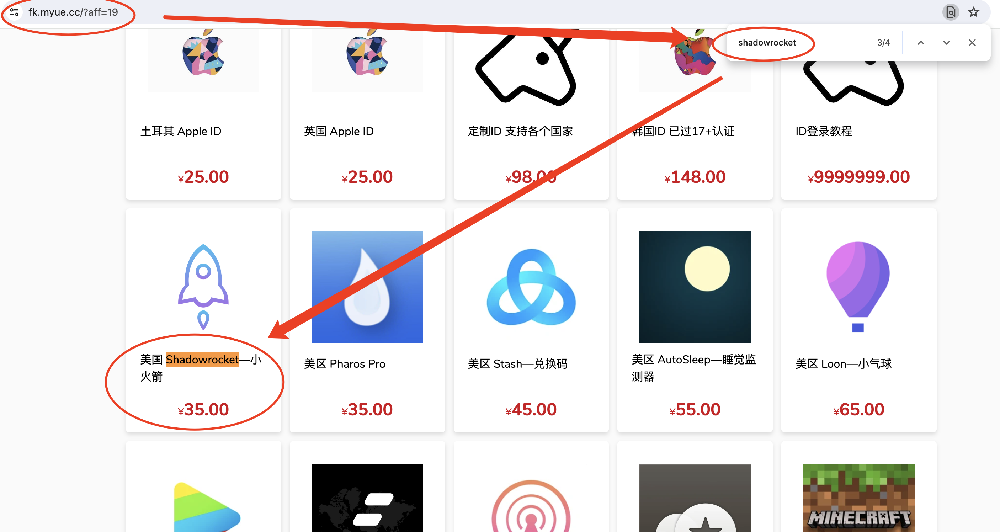
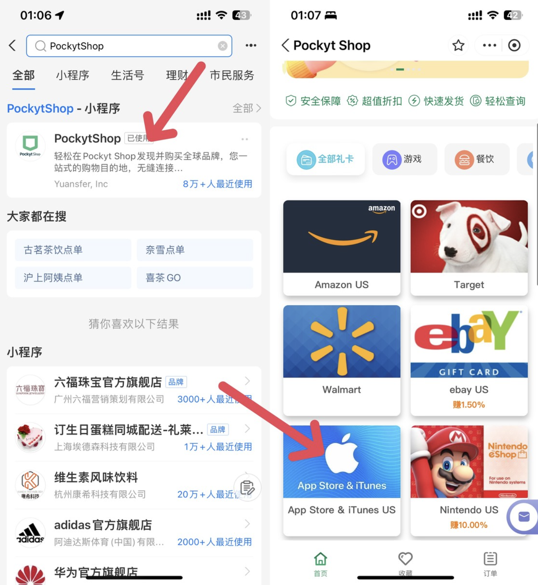
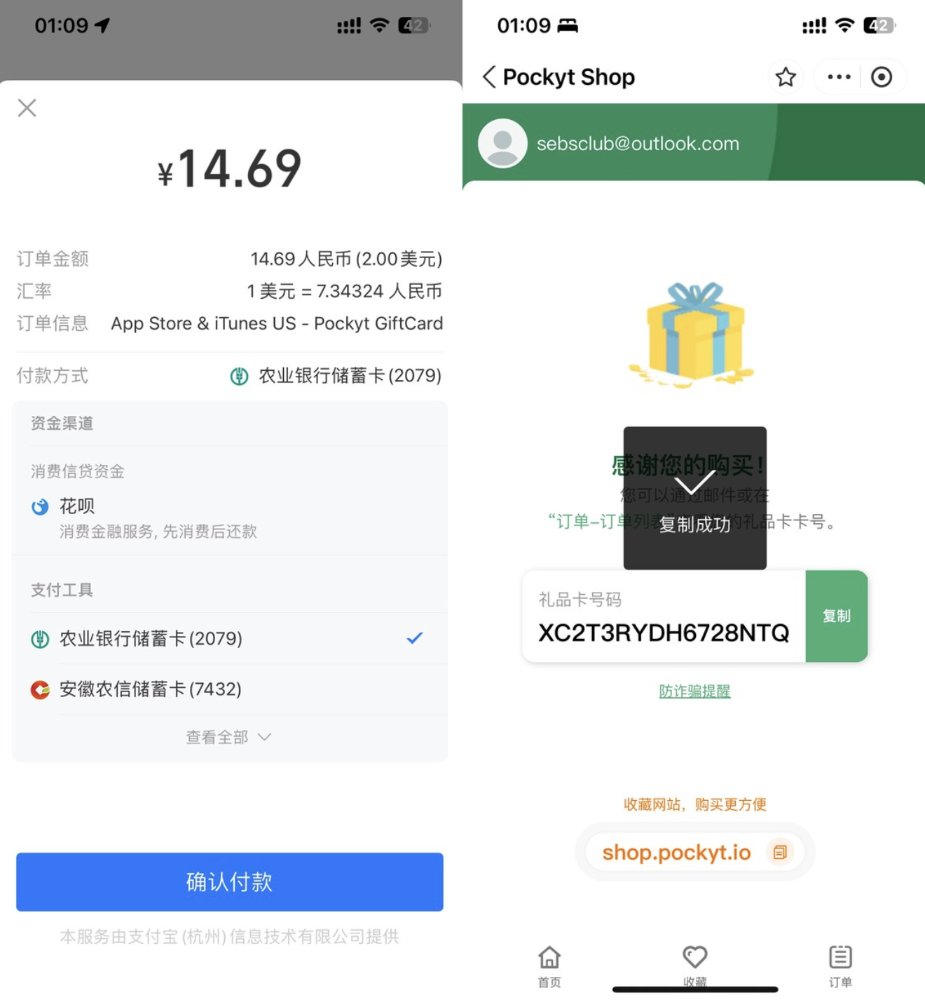
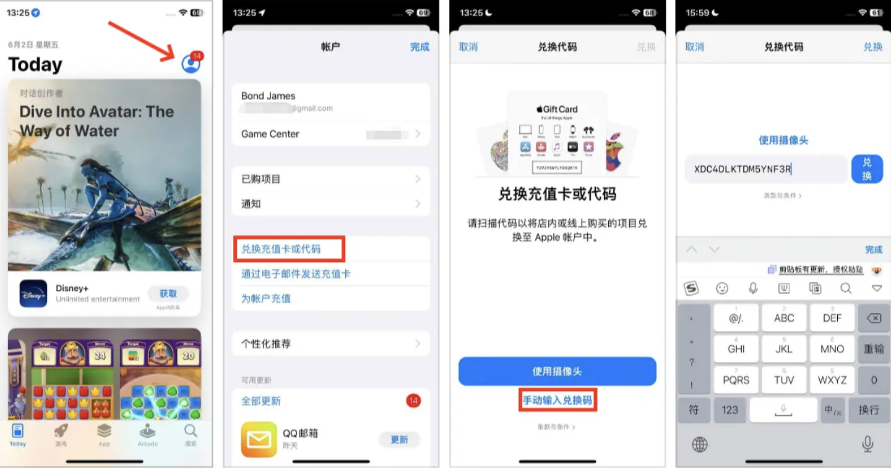

title: 科学上网_AppleID
date: 2019-06-19 18:02:45
categories:
[TOC]
美区应用的下载
可用的地址示例：
背景：美区 Apple ID 付款方式比较麻烦，不能绑定大陆发行的信用卡。而你又没有该类卡。
| 方式 | 推荐指数 | |
|---|---|---|
| 网站购买兑换码 | 不推荐：人傻钱多 | |
| 朋友转赠兑换码 | 不推荐：朋友那边需要绑定Visa付款方式 | |
| 自己充值购买(推荐) | 推荐：灵活性高 |
示例：Shadowrocket 下载
进入小卖部网站 https://fk.myue.cc/ 搜索 Shadowrocket
| 发卡网站 | 网站 | 商品 |
|---|---|---|
| 小卖部 | https://fk.myue.cc/ | Shadowrocket等 |
| leo小店 | https://shop.leouu.cn/ | 国内视频账号 |
| 更多发卡网站 | 2024 年 31 个可以购买美区 Apple ID 和 Shadowrocket 小火箭兑换码的发卡网站 |
示例：

购买后，进行兑换即可 Apple-美区兑换码用方法
苹果官网购买充值（银联卡）：https://www.apple.com/shop/gift-cards
其他参考文章：如何使用PockytShop购买美区苹果商店礼品卡充值余额
直接搜索 PockytShop，打开并登录，然后搜索选择到 App Store

购买后将得到礼品卡码。

最后打开 App Store，点开右上角账户，选择兑换充值卡，然后粘贴上刚才的号码就能完成兑换。现在就可以去购买 App 订阅服务了。

要查看当前的Apple ID余额，只需打开App Store，点击右上角的个人头像，你的余额会显示在屏幕顶部。